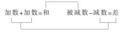
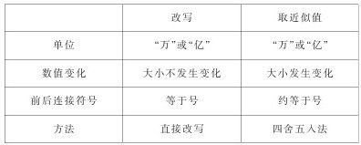

利用“整数和整数四则运算”，培养学生的逻辑思维能力 [1]
“整数和整数四则运算”这部分内容是建立在学生前三年学过的有关整数和四则运算的基础上的，它又是学生系统学习后面小数、分数及中学阶段数学的基础知识。教学时，教师要根据教材的特点，全面掌握教材的知识结构，明确具体的教学要求并结合教学内容有意识地培养学生的能力，使学生在知识技能、思维能力等方面都有较大的提高，为以后的学习打下较好的基础。
“小学数学教学要使学生既长知识，又长智慧。”五年制小学四年级已经开始进入高年级学习阶段，根据其年龄特征和接受能力，结合教材内容，应着重培养学生初步的逻辑思维能力。
一、抽象、概括能力的培养。
如，在学习加法和乘法的运算定律时，先通过具体实例（第12页例1、第14页例2、第25页例1、第27页例4、第32页例5）让学生进行计算，再各举两个例子让学生观察，然后让学生说出“你发现了什么规律”，最后概括出运算定律。教材中不仅概括出了运算定律，而且进一步介绍了用字母表示运算定理。这样一方面可提高学生的抽象、概括的程度，另一方面也便于学生记忆，并为以后正式学习用字母表示数打下初步的基础。又如，教学减法运算的意义，先出示结合实际的应用题，让学生观察、比较、找出第（2）、（3）题与第（1）题的联系和不同点，然后引导学生概括出减法的意义。
在抽象概括时，教师应该注意引导学生正确使用数学语言，以培养学生严谨、求实等良好的个性品质和学习习惯。
二、迁移、类推能力的培养。
该单元许多内容是在以前学习的基础上进一步学习的，如亿级数的读、写，把整亿的数写成用亿作单位的数，亿以上的数的大小比较，求比亿大的数的近似数等，这十分利于培养学生迁移、类推能力。教材通过提示语，目的是唤起学生的回忆，引导学生在旧知识的基础上，通过类推、迁移学会新知识。亿以上数的写法、大小比较、求近似数，教材的安排与亿级数的读法类似。
教学这部分知识时，教师要注意引导学生发现新旧知识间的联系，要在复习旧知识的基础上，把知识进行归纳、整理、扩展。这样既可培养学生类推、迁移的能力，又可使学生形成完整的系统的认识结构。
三、判断、推理能力的培养。
如教学加减法间的关系，通过对例题的观察、比较，教师有意识地整理并板书：

然后引导学生作出判断：在加法中的末知数，在减法中变成了已知数；在加法中的已知数，在减法中变成了未知数。所以，减法是加法的逆运算。又如，教学加法交换律和结合律，教师可先通过几个例子引导学生分析、比较，找出共同规律，做出判断。再举出几个例子，引导学生总结出一般规律，体现归纳推理的过程。这样，既有助于培养学生的判断能力，又有助于培养学生的推理能力。
四、引导学生归纳、整理，形成完整的认知结构。
如，教学计数单位时，先让学生想一想已经学过了哪些计数单位，然后告诉学生“十亿”“百亿”“千亿”也是计数单位。引导学生归纳一共学了多少计数单位，每相邻两个计数单位间有什么关系，个级、万级、亿级分别包括哪些数位，把计数单位从个位排列到千亿位以及是怎样排列的。教师要通过学生的活动，构建一个完整的数位顺序表。
有的学生对把一个数改写成以“万”或“亿”作单位的数与省略一个数“万”或“亿”后面的尾数取它的近似值，可能会发生混淆的现象，教师可引导学生归纳、整理成下表，帮助学生建立清晰、准确的概念：

学习了运算定律后，重点是通过实例引导学生把所学的知识应用于实际中。一方面加深理解所学内容，另一方面提高学生的计算能力和解决简单的实际问题的能力。教师可将运算定律和具体应用归纳、整理成表格，以帮助学生理解和记忆。
总之，四年级已开始进入比较系统的学习数学的阶段。教材在安排上已适当加强了概括性的数学知识，适当加强了知识的系统性，更加重视知识间的内在联系和思维能力的培养。因此，教师在教学时必须潜心钻研教材，深刻领会教材的编写意图并结合学生实际，恰当地处理教材，全面完成教学任务。